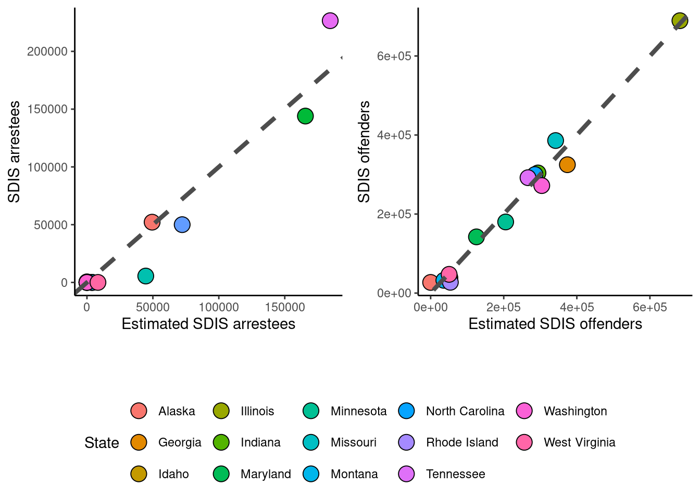
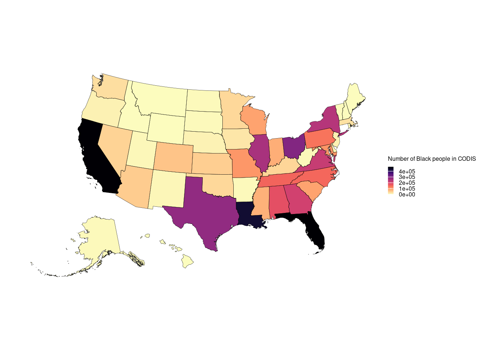

Regression to predict CODIS database proportions
2024-04-28
Last updated: 2024-08-14
Checks: 7 0
Knit directory: PODFRIDGE/
This reproducible R Markdown analysis was created with workflowr (version 1.7.1). The Checks tab describes the reproducibility checks that were applied when the results were created. The Past versions tab lists the development history.
Great! Since the R Markdown file has been committed to the Git repository, you know the exact version of the code that produced these results.
Great job! The global environment was empty. Objects defined in the global environment can affect the analysis in your R Markdown file in unknown ways. For reproduciblity it’s best to always run the code in an empty environment.
The command set.seed(20230302) was run prior to running the code in the R Markdown file. Setting a seed ensures that any results that rely on randomness, e.g. subsampling or permutations, are reproducible.
Great job! Recording the operating system, R version, and package versions is critical for reproducibility.
Nice! There were no cached chunks for this analysis, so you can be confident that you successfully produced the results during this run.
Great job! Using relative paths to the files within your workflowr project makes it easier to run your code on other machines.
Great! You are using Git for version control. Tracking code development and connecting the code version to the results is critical for reproducibility.
The results in this page were generated with repository version be5e7b5. See the Past versions tab to see a history of the changes made to the R Markdown and HTML files.
Note that you need to be careful to ensure that all relevant files for the analysis have been committed to Git prior to generating the results (you can use wflow_publish or wflow_git_commit). workflowr only checks the R Markdown file, but you know if there are other scripts or data files that it depends on. Below is the status of the Git repository when the results were generated:
Untracked files:
Untracked: PODFRIDGE/
Untracked: Rplots.pdf
Untracked: data/final_CODIS_data.csv
Unstaged changes:
Modified: analysis/final_equation.Rmd
Modified: output/aggregated_llr_results_by_population.csv
Note that any generated files, e.g. HTML, png, CSS, etc., are not included in this status report because it is ok for generated content to have uncommitted changes.
These are the previous versions of the repository in which changes were made to the R Markdown (analysis/regression.Rmd) and HTML (docs/regression.html) files. If you’ve configured a remote Git repository (see ?wflow_git_remote), click on the hyperlinks in the table below to view the files as they were in that past version.
| File | Version | Author | Date | Message |
|---|---|---|---|---|
| html | be5e7b5 | hcvw | 2024-08-14 | Build site. |
| Rmd | b9997a4 | hcvw | 2024-08-14 | wflow_publish(c(“analysis/regression.Rmd”, “data/SDIS.csv”, “data/NDIS.csv”, |
| html | e6972d6 | hcvw | 2024-06-25 | Build site. |
| html | 1eb6d2c | hcvw | 2024-06-25 | Build site. |
| Rmd | 96b197a | hcvw | 2024-06-25 | wflow_publish(c(“analysis/regression.Rmd”)) |
# Load necessary libraries
library(readr) # read csv files
library(tidyverse) # census API
library(knitr)
library(jtools)
library(sandwich) # robust covariance estimator
library(ggplot2) # For plotting
library(stats) # For statistical functions
library(tidycensus) # For accessing US census data
# Load additional libraries for combining plots
library(cowplot)
library(ggpubr)
library(viridis)
library(sf)
# Load prison data
prison_data = read.csv("./data/populations_states.csv")
# Load CODIS data
codis_data = read.csv("./data/CODIS_data.csv")
# Create a data frame for Murphy and Tong profiles
murphy.tong = data.frame(
state = c("California", "Florida", "Indiana", "Maine", "Nevada", "South Dakota", "Texas"),
total = c(2768269, 1350667, 307714, 32847, 167726, 67600, 960985,2768269, 1350667, 307714, 32847, 167726, 67600, 960985),
mt.percent = c(0.296, 0.614, 0.7, 0.928, 0.694, 0.668, 0.373,0.171, 0.352, 0.26, 0.039, 0.256, 0.06, 0.291),
race = c("White","White","White","White","White","White","White","Black","Black","Black","Black","Black","Black","Black")
)# Load necessary libraries
# Calculate the number of White and Black profiles in Murphy and Tong data
murphy.tong$n = murphy.tong$total * murphy.tong$mt.percent
# Extract year from the date and filter data for 2022
prison_data$year = substring(prison_data$date, 1, 4)
prison_data_2022 = prison_data[which(prison_data$year == "2022"),]
prison_data_2022 = prison_data_2022[!duplicated(prison_data_2022[, 'state']),]
# Load census data for each state
# P1_002N is the total population, P1_003N is the total White population, and P1_004N is the total Black population
us_state_density <- get_decennial(
geography = "state",
variables = c(all = "P1_002N", white = "P1_003N", black = "P1_004N"),
year = 2020,
geometry = TRUE,
keep_geo_vars = TRUE
)
# Spread the data into a wider format
us_state_density = spread(us_state_density, variable, value)
# Calculate the proportion of Black and White populations
us_state_density$census.percent.black = us_state_density$black / us_state_density$all
us_state_density$census.percent.white = us_state_density$white / us_state_density$all
# Rename column for merging
us_state_density$state = us_state_density$NAME.x
# Merge census data with prison data
us_state_density = merge(us_state_density, prison_data_2022, by = "state")
# Calculate the proportion of Black and White incarcerated individuals
us_state_density$percent.black.incarc = us_state_density$incarcerated_black / us_state_density$incarcerated_total
us_state_density$percent.white.incarc = us_state_density$incarcerated_white / us_state_density$incarcerated_total
# Merge with CODIS data
us_state_density = merge(us_state_density, codis_data, by = "state")
# Calculate the number of Black and White profiles in CODIS
us_state_density$black_profiles = us_state_density$percent.black.incarc * (us_state_density$offender_profiles)
us_state_density$white_profiles = us_state_density$percent.white.incarc * (us_state_density$offender_profiles)
us_state_density_black = as.data.frame(us_state_density[,c("state","all","black","census.percent.black","incarcerated_total",
"incarcerated_black","percent.black.incarc","arrestee_profiles","offender_profiles","black_profiles")])
us_state_density_black$race = "Black"
colnames(us_state_density_black) = c("state","all","population","census.percent","incarcerated_total",
"incarcerated_race","percent.incar","arrestee_profiles","offender_profiles","geometry","race_profiles","race")
us_state_density_white = as.data.frame(us_state_density[,c("state","all","white","census.percent.white","incarcerated_total",
"incarcerated_white","percent.white.incarc", "arrestee_profiles","offender_profiles","white_profiles")])
us_state_density_white$race = "White"
colnames(us_state_density_white) = c("state","all","population","census.percent","incarcerated_total",
"incarcerated_race","percent.incar","arrestee_profiles","offender_profiles","geometry","race_profiles","race")
inferred_data = rbind(us_state_density_black, us_state_density_white)
# Combine Murphy and Tong data with the merged dataset
combined = merge(murphy.tong, inferred_data, by = c("state","race"), all.x = TRUE)
combined$race_bin = ifelse(combined$race == "White",0,1)# Fit linear models for Black and White population proportions
model.all <- lm(
mt.percent ~ # Outcome: Murphy & Tong numbers for 7 states
census.percent + # Main effect of census proportion on CODIS proportion
percent.incar + # Main effect of prison proportion on CODIS proportion
race_bin+ # Main effect of race. This will estimate the change in CODIS proportion for different races relative to a baseline race.
race_bin:census.percent + # Interaction between race and census proportion.
# This checks if the effect of census proportion on CODIS proportion varies by race.
race_bin:percent.incar, # Interaction between race and prison proportion.
# This checks if the effect of prison proportion on CODIS proportion varies by race.
data = combined # The data set containing the variables
)
summary(model.all)
plot_summs(model.all, robust = TRUE)
| Version | Author | Date |
|---|---|---|
| be5e7b5 | hcvw | 2024-08-14 |
# Run regression model for different combinations of the following predictors:
# race, census proportion of race, estimated population from Klein data
formula_a = "census.percent + percent.incar + race_bin" # no interactions
formula_b = "percent.incar + race_bin + race_bin:percent.incar" # no census
formula_c = "percent.incar + race_bin" # no census or interaction
formula_d = "census.percent + percent.incar" # no race
formulas = c(formula_a, formula_b, formula_c, formula_d)
model_df = as.data.frame(matrix(0,nrow = 4, ncol = 3))
colnames(model_df) = c("model","R^2","Anova")
for(i in 1:4){
form = formulas[[i]]
model <- lm(paste0('mt.percent ~', form), data = combined)
p.val = round(anova(model, model.all)[[6]][2],2)
model_df[i,] = c(form, round(summary(model)$adj.r.squared,2),p.val)
}
kable(model_df)
# generate predictions based on the model with all coefficients
combined$prediction = predict(model.all, combined)# Plot the results with linear regression lines
ggplot(data = combined) +
geom_point(aes(x = prediction, y = mt.percent,fill=state,shape = race),size=5,col="black") +
scale_shape_manual(name="Race",labels = c("Black","White"),values = c(21,24)) +
geom_abline(intercept = 0, slope = 1,col ="grey30", linetype = "dashed",size=1.5) +
theme_classic() + xlab("Estimated CODIS profiles") + ylab("Murphy & Tong profiles (FOIA)") +
annotate("text", x=0.2, y=0.75, size = 6, label= paste0(as.expression("R² = "), round(summary(model)$adj.r.squared,2))) +
annotate("text", x=0.6, y=0.56, size = 4, label= "Perfect prediction line",angle = 46) +
guides(fill=guide_legend(override.aes=list(shape=21))) +
theme(axis.text.x = element_text(color = "black", size = 16, angle = 0, hjust = .5, vjust = .5, face = "plain"),
axis.text.y = element_text(color = "black", size = 16, angle = 0, hjust = 1, vjust = 0, face = "plain"),
axis.title.x = element_text(color = "black", size = 16, angle = 0, hjust = .5, vjust = 0, face = "plain"),
axis.title.y = element_text(color = "black", size = 16, angle = 90, hjust = .5, vjust = .5, face = "plain"),
aspect.ratio=1) 
| Version | Author | Date |
|---|---|---|
| 1eb6d2c | hcvw | 2024-06-25 |
combined$Dif <- combined$prediction - combined$mt.percent
combined$Avg <- (combined$prediction + combined$mt.percent) / 2
ggplot(combined, aes(x = Avg, y = Dif)) +
geom_point(aes(shape = race,fill=state),size=4,col="black") +
scale_fill_discrete(name = "State") +
guides(fill=guide_legend(override.aes=list(shape=21))) +
scale_shape_manual(name="Race",labels = c("Black","White"),values = c(21,24)) +
geom_hline(yintercept = mean(combined$Dif), colour = "black", size = 1) +
geom_hline(yintercept = mean(combined$Dif) - (1.96 * sd(combined$Dif)), colour = "grey30", size = 0.5) +
geom_hline(yintercept = mean(combined$Dif) + (1.96 * sd(combined$Dif)), colour = "grey30", size = 0.5) +
ylab("Difference Between Measures") +
xlab("Average Measure") + theme_light() +
theme(axis.text.x = element_text(color = "black", size = 16, angle = 0, hjust = .5, vjust = .5, face = "plain"),
axis.text.y = element_text(color = "black", size = 16, angle = 0, hjust = 1, vjust = 0, face = "plain"),
axis.title.x = element_text(color = "black", size = 16, angle = 0, hjust = .5, vjust = 0, face = "plain"),
axis.title.y = element_text(color = "black", size = 16, angle = 90, hjust = .5, vjust = .5, face = "plain"),
aspect.ratio=1) 
| Version | Author | Date |
|---|---|---|
| 1eb6d2c | hcvw | 2024-06-25 |
# Read in CSV files
NDIS = read.csv("./data/NDIS.csv") # National DNA Index System data
SDIS = read.csv("./data/SDIS.csv") # State DNA Index System data
# Merge NDIS and SDIS datasets by state
NDIS_SDIS = merge(NDIS, SDIS, by = "State")
# Rename columns to distinguish between NDIS and SDIS data
colnames(NDIS_SDIS) <- gsub('.x','.NDIS', names(NDIS_SDIS))
colnames(NDIS_SDIS) <- gsub('.y','.SDIS', names(NDIS_SDIS))
# Merge NDIS_SDIS data with prison data
colnames(prison_data_2022)[12] = "State"
SDIS_states = merge(NDIS_SDIS, prison_data_2022, by = "State")
# Merge census data with NDIS_SDIS_prison data
colnames(us_state_density)[1] = "State"
us_state_population= us_state_density[, c("State", "census.percent.black", "census.percent.white")]
SDIS_regression = merge(SDIS_states, us_state_population, by = "State")
# calculate percent of prison population
SDIS_regression$percent.black.prison = SDIS_regression$incarcerated_black / SDIS_regression$incarcerated_total
SDIS_regression$percent.white.prison = SDIS_regression$incarcerated_white / SDIS_regression$incarcerated_total
# Calculate CODIS black and white proportions using previous regression
SDIS_regression$CODIS.black = model.all$coeff[1] + model.all$coeff[2] * SDIS_regression$census.percent.black + model.all$coeff[3] * SDIS_regression$percent.black.prison + model.all$coeff[4] + model.all$coeff[5]* SDIS_regression$census.percent.black + model.all$coeff[6] * SDIS_regression$percent.black
SDIS_regression$CODIS.white = model.all$coeff[1] + model.all$coeff[2] * SDIS_regression$census.percent.white + model.all$coeff[3] * SDIS_regression$percent.white.prison
SDIS_regression$source = "Regression"
SDIS_regression.trim = SDIS_regression[, c("State", "CODIS.black", "CODIS.white", "source")]
# Prepare data for regression analysis for SDIS arrestees
SDIS_arrestees = SDIS_regression[-c(which(is.na(SDIS_regression$N_arrestees.SDIS))),]
SDIS_arrestees = SDIS_arrestees[, c("State", "N_arrestees.SDIS", "census.percent.black", "census.percent.white", "percent.black.prison", "percent.white.prison", "N_arrestees.NDIS")]
# Linear model for SDIS arrestees using census percent, prison percent, and number of people in NDIS as predictors
SDIS_arrestee = lm(N_arrestees.SDIS ~ census.percent.black + census.percent.white + percent.black.prison + percent.white.prison + N_arrestees.NDIS, data = SDIS_arrestees)
summary(SDIS_arrestee)
# Prepare data for regression analysis for SDIS offenders
SDIS_offenders = SDIS_regression[-c(which(is.na(SDIS_regression$N_offenders.SDIS))),]
SDIS_offenders = SDIS_offenders[, c("State", "N_offenders.SDIS", "census.percent.black", "census.percent.white", "percent.black.prison", "percent.white.prison", "N_offenders.NDIS")]
# Perform regression analysis for SDIS offenders
SDIS_offender = lm(N_offenders.SDIS ~ census.percent.black + census.percent.white + percent.black.prison + percent.white.prison + N_offenders.NDIS, data = SDIS_offenders)
summary(SDIS_offender)
# calculate regression prediction for each state
SDIS_regression$SDIS.arrestee.prediction = SDIS_arrestee$coeff[1] + SDIS_arrestee$coeff[2] * SDIS_regression$census.percent.black +
SDIS_arrestee$coeff[3] * SDIS_regression$census.percent.white +
SDIS_arrestee$coeff[4] * SDIS_regression$percent.black.prison +
SDIS_arrestee$coeff[5] * SDIS_regression$percent.white.prison +
SDIS_arrestee$coeff[6] * SDIS_regression$N_arrestees.NDIS
SDIS_regression$SDIS.offender.prediction = SDIS_offender$coeff[1] + SDIS_offender$coeff[2] * SDIS_regression$census.percent.black +
SDIS_offender$coeff[3] * SDIS_regression$census.percent.white +
SDIS_offender$coeff[4] * SDIS_regression$percent.black.prison +
SDIS_offender$coeff[5] * SDIS_regression$percent.white.prison +
SDIS_offender$coeff[6] * SDIS_regression$N_offenders.NDIS
# make sure no predictions are less than 0
SDIS_regression$SDIS.offender.prediction[SDIS_regression$SDIS.offender.prediction < 0] = 0
SDIS_regression$SDIS.arrestee.prediction[SDIS_regression$SDIS.arrestee.prediction < 0] = 0
all.arrestees.SDIS <- SDIS_regression[which(!is.na(SDIS_regression$N_arrestees.SDIS)),]
all.offenders.SDIS <- SDIS_regression[which(!is.na(SDIS_regression$N_offenders.SDIS)),]
# Plot predicted vs. actual SDIS arrestees
p1 = ggplot(data = all.arrestees.SDIS) +
geom_point(aes(x = SDIS.arrestee.prediction, y = N_arrestees.SDIS, fill = State), size = 5, col = "black", shape = 21) +
geom_abline(intercept = 0, slope = 1, col = "grey30", linetype = "dashed", size = 1.5) +
theme_classic() + xlab("Estimated SDIS arrestees") + ylab("SDIS arrestees") +
guides(fill = guide_legend(override.aes = list(shape = 21))) +
theme(legend.position = "none")
# Plot predicted vs. actual SDIS offenders
p2 = ggplot(data = all.offenders.SDIS) +
geom_point(aes(x = SDIS.offender.prediction, y = N_offenders.SDIS, fill = State), size = 5, col = "black", shape = 21) +
geom_abline(intercept = 0, slope = 1, col = "grey30", linetype = "dashed", size = 1.5) +
theme_classic() + xlab("Estimated SDIS offenders") + ylab("SDIS offenders") +
guides(fill = guide_legend(override.aes = list(shape = 21))) +
theme(legend.position = "none")
# Extract legend from one of the plots
leg = get_legend(ggplot(data = all.offenders.SDIS) +
geom_point(aes(x = SDIS.offender.prediction, y = N_offenders.SDIS, fill = State), size = 5, col = "black", shape = 21) +
geom_abline(intercept = 0, slope = 1, col = "grey30", linetype = "dashed", size = 1.5) +
theme_classic() + xlab("Estimated SDIS offenders") + ylab("SDIS offenders") +
guides(fill = guide_legend(override.aes = list(shape = 21))) +
theme(legend.position = "bottom", axis.text.x = element_text(color = "black", size = 16, angle = 0, hjust = .5, vjust = .5, face = "plain"),
axis.text.y = element_text(color = "black", size = 16, angle = 0, hjust = 1, vjust = 0, face = "plain"),
axis.title.x = element_text(color = "black", size = 16, angle = 0, hjust = .5, vjust = 0, face = "plain"),
axis.title.y = element_text(color = "black", size = 16, angle = 90, hjust = .5, vjust = .5, face = "plain"),
aspect.ratio = 1))
# Combine plots a and b into a grid with legend
p3 = plot_grid(p1, p2, ncol = 2)
plot_grid(NULL, p3, NULL, leg, nrow = 4, rel_heights = c(0, 1.5, 0.2, 0.5))
| Version | Author | Date |
|---|---|---|
| be5e7b5 | hcvw | 2024-08-14 |
Murphy = read.csv("./data/Murphy_FOIA.csv") # FOIA data from Murphy
# Reshape Murphy data to wide format
Murphy_wide = reshape(Murphy, idvar = "State", timevar = "pop", direction = "wide")
Murphy_wide = Murphy_wide[, c("State", "value.Total", "value.White", "value.Black")]
# Prepare final dataset
final.data = merge(SDIS_regression, Murphy_wide, by = "State", all.x = TRUE)
# Calculate final estimates for Black and White populations in CODIS based on different sources
final.data = final.data[-c(which(final.data$State == "Michigan")),]
for (i in 1:nrow(final.data)) {
print(i)
if (!is.na(final.data$value.Total[i])) {
final.data$final.Black[i] = final.data$value.Total[i] * (final.data$value.Black[i] / 100)
final.data$final.White[i] = final.data$value.Total[i] * (final.data$value.White[i] / 100)
final.data$source[i] = "Murphy"
} else if (!is.na(final.data$N_total.SDIS[i])) {
final.data$final.Black[i] = (final.data$N_total.SDIS[i]) * final.data$CODIS.black[i]
final.data$final.White[i] = (final.data$N_total.SDIS[i]) * final.data$CODIS.white[i]
final.data$source[i] = "SDIS+regression"
} else {
final.data$final.Black[i] = (final.data$SDIS.arrestee.prediction[i] + final.data$SDIS.offender.prediction[i]) * final.data$CODIS.black[i]
final.data$final.White[i] = (final.data$SDIS.arrestee.prediction[i] + final.data$SDIS.offender.prediction[i]) * final.data$CODIS.white[i]
final.data$source[i] = "Regression only"
}
}[1] 1
[1] 2
[1] 3
[1] 4
[1] 5
[1] 6
[1] 7
[1] 8
[1] 9
[1] 10
[1] 11
[1] 12
[1] 13
[1] 14
[1] 15
[1] 16
[1] 17
[1] 18
[1] 19
[1] 20
[1] 21
[1] 22
[1] 23
[1] 24
[1] 25
[1] 26
[1] 27
[1] 28
[1] 29
[1] 30
[1] 31
[1] 32
[1] 33
[1] 34
[1] 35
[1] 36
[1] 37
[1] 38
[1] 39
[1] 40
[1] 41
[1] 42
[1] 43
[1] 44
[1] 45
[1] 46
[1] 47
[1] 48# Plot the final estimates for Black and White populations in CODIS
ggplot(final.data) +
geom_point(aes(x = State, y = final.Black, fill = source, shape = "Black"), size = 2.5, col = "black") +
geom_point(aes(x = State, y = final.White, fill = source, shape = "White"), size = 2.5, col = "black") +
scale_fill_manual(name = "Source", labels = c("Murphy", "Regression only", "SDIS+regression"), values = c("#9A77CF", "#EC4176", "#FFA45E")) +
scale_shape_manual(name = "Race", labels = c("Black", "White"), values = c(21, 24)) +
theme_bw() +
guides(fill = guide_legend(override.aes = list(shape = 21))) +
theme(axis.text.x = element_text(size = 8, angle = 90, vjust = 0.5, hjust = 1)) +
ylab("Number of People in CODIS")
| Version | Author | Date |
|---|---|---|
| be5e7b5 | hcvw | 2024-08-14 |
final.data.sf = st_as_sf(final.data)
final.data.sf = final.data.sf %>%
tigris::shift_geometry()
ggplot() +
geom_sf(data = final.data.sf$geometry, aes(fill = final.data.sf$final.Black),color = NA) +
geom_sf(data = final.data.sf$geometry, color = "black",lwd = 0.1,alpha = 0) +
theme_void(base_size = 11) +
scale_fill_viridis(option = "magma", direction = -1)+
labs(fill = "Number of Black people in CODIS") +
theme(plot.margin = unit(rep(0.5, 4), "cm")) +
theme(legend.key.height= unit(0.2, 'cm'), legend.key.width= unit(0.2, 'cm'),
legend.title=element_text(size=6), legend.text=element_text(size=6)) 
| Version | Author | Date |
|---|---|---|
| be5e7b5 | hcvw | 2024-08-14 |
ggplot() +
geom_sf(data = final.data.sf$geometry, aes(fill = final.data.sf$final.Black/(final.data.sf$final.Black + final.data.sf$final.White)),color = NA) +
geom_sf(data = final.data.sf$geometry, color = "black",lwd = 0.1,alpha = 0) +
theme_void(base_size = 11) +
scale_fill_viridis(option = "magma", direction = -1)+
labs(fill = "Percent of people in CODIS that are Black") +
theme(plot.margin = unit(rep(0.5, 4), "cm")) +
theme(legend.key.height= unit(0.2, 'cm'), legend.key.width= unit(0.2, 'cm'),
legend.title=element_text(size=6), legend.text=element_text(size=6))
| Version | Author | Date |
|---|---|---|
| be5e7b5 | hcvw | 2024-08-14 |
final.data[,c("State","final.Black","final.White","source")] State final.Black final.White source
1 Alabama 181118.5149 217600.769 SDIS+regression
2 Alaska 3815.5604 27017.748 Regression only
3 Arizona 50414.9656 219982.541 Regression only
4 Arkansas 4031.2855 8680.932 SDIS+regression
5 California 473373.9990 819407.624 Murphy
6 Colorado 57866.4208 262106.908 SDIS+regression
7 Delaware 10505.3095 12521.567 Regression only
8 Florida 475434.7840 829309.538 Murphy
9 Georgia 206442.0982 181496.282 SDIS+regression
10 Hawaii 0.0000 0.000 Regression only
11 Idaho 963.4824 34101.874 SDIS+regression
12 Illinois 253303.7558 305785.832 SDIS+regression
13 Indiana 80005.6400 215399.800 Murphy
14 Iowa 23547.7791 129417.794 Regression only
15 Kansas 47971.5739 228957.430 Regression only
16 Kentucky 39635.3249 206063.727 Regression only
17 Louisiana 432013.8926 338844.041 SDIS+regression
18 Maine 1281.0330 30482.016 Murphy
19 Maryland 105523.8679 63185.108 Regression only
20 Massachusetts 29089.9767 82413.819 Regression only
22 Minnesota 37914.2174 115906.979 SDIS+regression
23 Mississippi 77616.9619 62226.769 SDIS+regression
24 Missouri 103504.8306 309407.963 SDIS+regression
25 Montana 641.1110 28312.414 SDIS+regression
26 Nebraska 10883.2023 42568.168 Regression only
27 Nevada 42937.8560 116401.844 Murphy
28 New Hampshire 1150.5349 25032.868 Regression only
29 New Jersey 12389.6261 11436.627 SDIS+regression
30 New Mexico 7904.7437 125143.981 Regression only
31 New York 238663.9932 242441.361 Regression only
32 North Carolina 151156.0304 193565.650 SDIS+regression
33 North Dakota 3723.8156 30201.743 Regression only
34 Ohio 296953.4390 619494.658 Regression only
35 Oklahoma 37023.9187 123653.578 Regression only
36 Oregon 12540.8998 185331.823 Regression only
37 Pennsylvania 138395.0744 254930.252 Regression only
38 Rhode Island 5961.4416 8911.275 SDIS+regression
39 South Carolina 91029.7856 91493.358 SDIS+regression
40 South Dakota 4056.0000 45156.800 Murphy
41 Tennessee 154617.8926 317725.504 Regression only
42 Texas 279646.6350 358447.405 Murphy
43 Utah 5888.7593 94268.650 Regression only
44 Vermont 2051.7990 38945.970 Regression only
45 Virginia 218711.3900 275687.781 SDIS+regression
46 Washington 31472.5629 235805.829 SDIS+regression
47 West Virginia 4234.0180 47855.252 SDIS+regression
48 Wisconsin 91303.4332 266299.611 Regression only
49 Wyoming 881.2959 24927.548 Regression onlywrite.csv(final.data, "./data/final_CODIS_data.csv")
sessionInfo()R version 4.3.1 (2023-06-16)
Platform: x86_64-pc-linux-gnu (64-bit)
Running under: Ubuntu 22.04.3 LTS
Matrix products: default
BLAS: /usr/lib/x86_64-linux-gnu/openblas-pthread/libblas.so.3
LAPACK: /usr/lib/x86_64-linux-gnu/openblas-pthread/libopenblasp-r0.3.20.so; LAPACK version 3.10.0
locale:
[1] LC_CTYPE=en_US.UTF-8 LC_NUMERIC=C
[3] LC_TIME=en_US.UTF-8 LC_COLLATE=en_US.UTF-8
[5] LC_MONETARY=en_US.UTF-8 LC_MESSAGES=en_US.UTF-8
[7] LC_PAPER=en_US.UTF-8 LC_NAME=C
[9] LC_ADDRESS=C LC_TELEPHONE=C
[11] LC_MEASUREMENT=en_US.UTF-8 LC_IDENTIFICATION=C
time zone: America/New_York
tzcode source: system (glibc)
attached base packages:
[1] stats graphics grDevices utils datasets methods base
other attached packages:
[1] sf_1.0-14 viridis_0.6.4 viridisLite_0.4.2 ggpubr_0.6.0
[5] cowplot_1.1.1 tidycensus_1.4.4 sandwich_3.1-0 jtools_2.2.2
[9] knitr_1.46 lubridate_1.9.3 forcats_1.0.0 stringr_1.5.0
[13] dplyr_1.1.4 purrr_1.0.2 tidyr_1.3.0 tibble_3.2.1
[17] ggplot2_3.5.0 tidyverse_2.0.0 readr_2.1.5 workflowr_1.7.1
loaded via a namespace (and not attached):
[1] tidyselect_1.2.0 farver_2.1.1 fastmap_1.1.1 promises_1.2.1
[5] digest_0.6.33 timechange_0.2.0 lifecycle_1.0.4 ellipsis_0.3.2
[9] processx_3.8.4 magrittr_2.0.3 compiler_4.3.1 rlang_1.1.3
[13] sass_0.4.7 tools_4.3.1 utf8_1.2.4 yaml_2.3.7
[17] ggsignif_0.6.4 labeling_0.4.2 curl_5.0.2 classInt_0.4-9
[21] xml2_1.3.5 abind_1.4-5 KernSmooth_2.23-22 withr_3.0.0
[25] grid_4.3.1 fansi_1.0.6 git2r_0.33.0 e1071_1.7-13
[29] colorspace_2.1-0 scales_1.3.0 cli_3.6.2 rmarkdown_2.25
[33] crayon_1.5.2 generics_0.1.3 rstudioapi_0.15.0 httr_1.4.7
[37] tzdb_0.4.0 DBI_1.1.3 cachem_1.0.8 proxy_0.4-27
[41] pander_0.6.5 rvest_1.0.3 vctrs_0.6.5 tigris_2.0.3
[45] jsonlite_1.8.8 carData_3.0-5 car_3.1-2 callr_3.7.3
[49] hms_1.1.3 rstatix_0.7.2 jquerylib_0.1.4 units_0.8-3
[53] glue_1.7.0 ps_1.7.6 stringi_1.7.12 gtable_0.3.3
[57] later_1.3.1 munsell_0.5.0 pillar_1.9.0 rappdirs_0.3.3
[61] htmltools_0.5.6 R6_2.5.1 rprojroot_2.0.3 evaluate_0.21
[65] lattice_0.21-8 highr_0.10 backports_1.4.1 broom_1.0.5
[69] httpuv_1.6.11 bslib_0.5.1 class_7.3-22 Rcpp_1.0.11
[73] uuid_1.1-1 gridExtra_2.3 whisker_0.4.1 xfun_0.44
[77] fs_1.6.3 zoo_1.8-12 getPass_0.2-4 pkgconfig_2.0.3